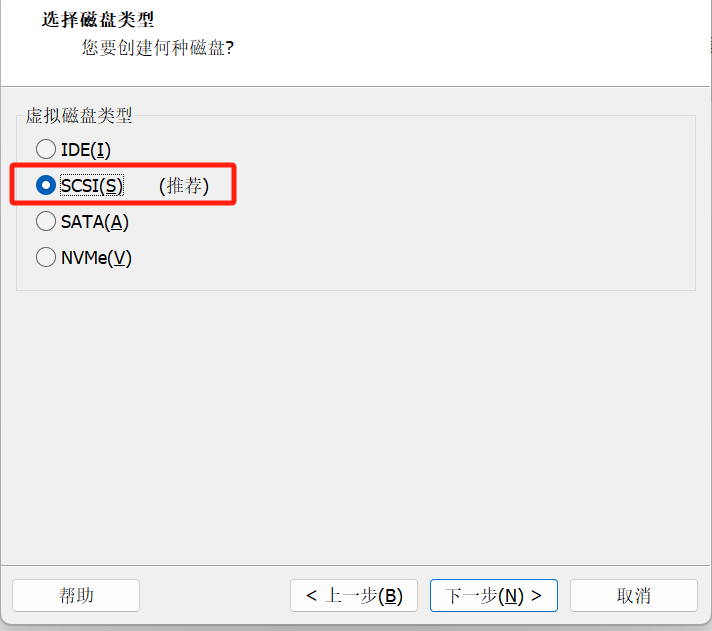
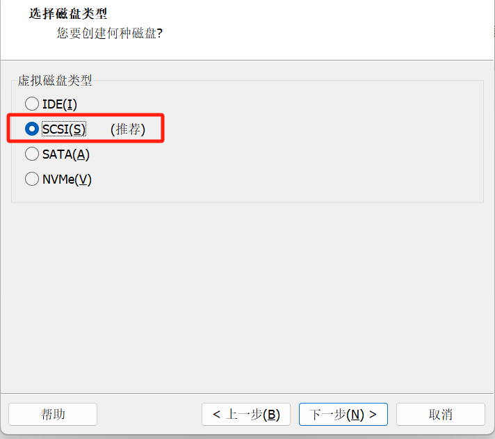
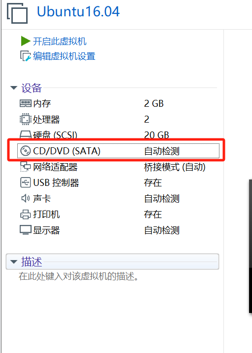
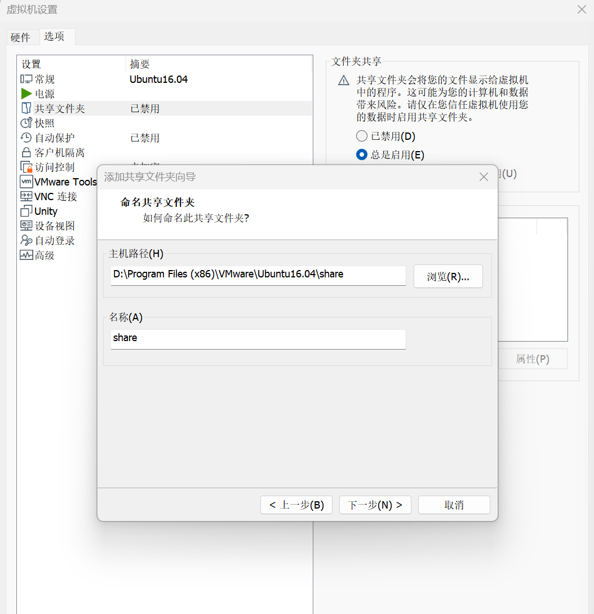
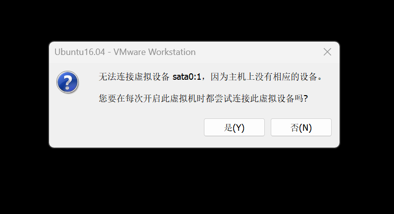
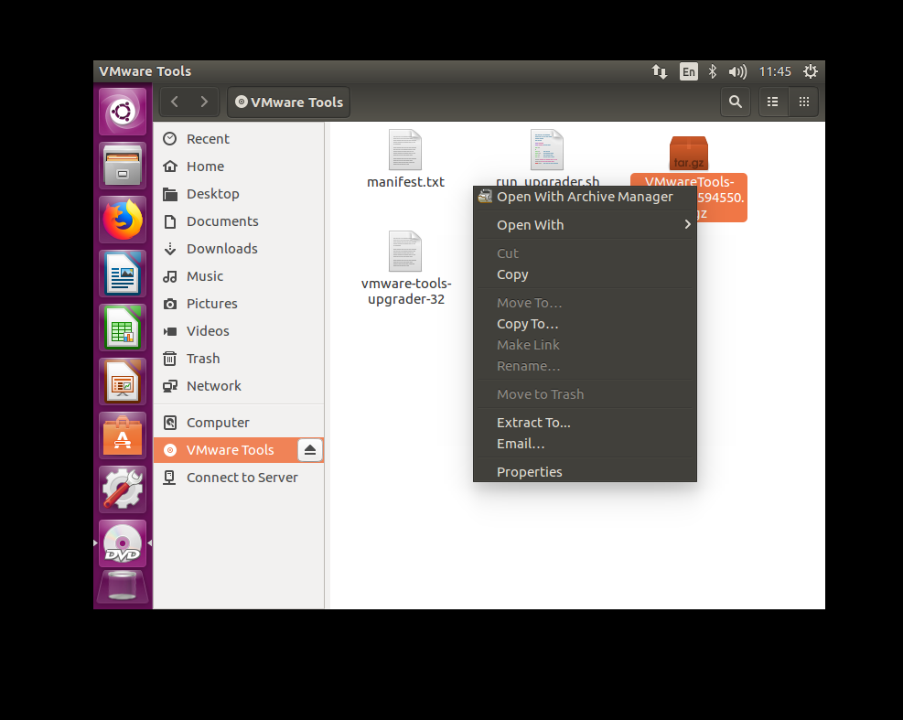
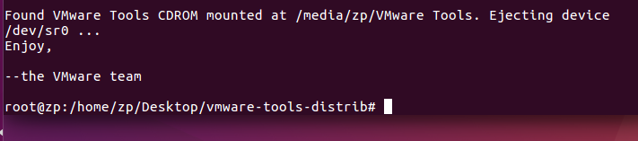
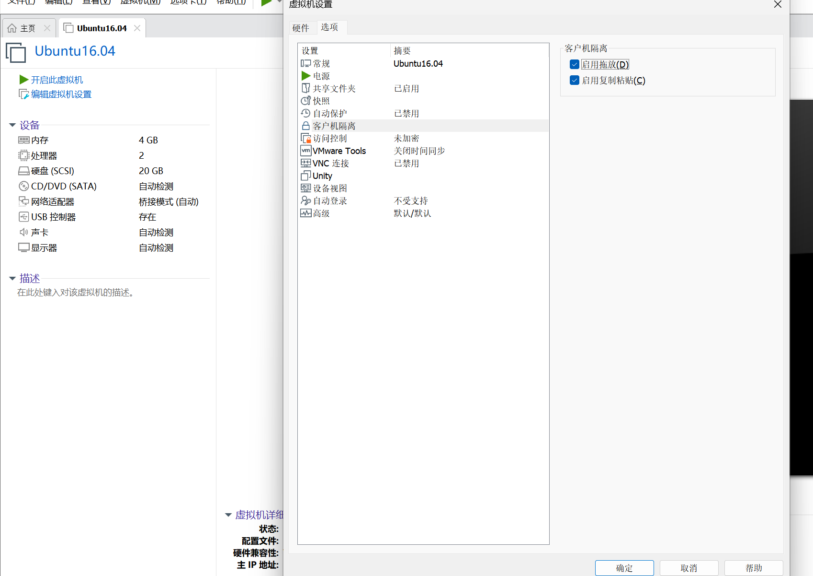

Reference
0 卸载VMwareWorkstation
1 下载VMwareWorkstation
有一个 github仓库 收集了各种版本的下载地址，我下载的是15.5.0的版本.
安装时修改安装路径，一直点击下一步即可.
2 下载Ubuntu
可以在 清华大学的镜像站 里下载各个版本的Ubuntu，我下载的是16.04的版本
3 创建虚拟机
在本地电脑选择一个剩余容量大于20G的硬盘，新建一个文件夹
Ubuntu16.04.进入VMware Workstation，点击创建新的虚拟机.
选择
自定义.
点击
下一步.<img src="image-2.png" alt="alt text" style="width:50%; height:auto;"></div>
选择
稍后安装操作系统.

选择操作系统为
Linux，版本为Ubuntu 64位.
修改虚拟机名称（可选），修改文件夹位置为在第1步创建的文件夹
我的电脑是i7，内存是16GB，所以
处理器数理我选择2，虚拟机内存我选择2GB.选择
桥接网络
使用
推荐并选择下一步 
选择
创建新虚拟磁盘最大磁盘大小选择
20G，选择将虚拟磁盘存储为单个文件点击
下一步点击
完成
4 给虚拟机配置系统
单击
CD/DVD
连接选择
使用iso映像文件，选择前面下载的iso文件，点击确定点击
开启此虚拟机弄到这一步的时候，我发现我的电脑直接蓝屏了，然后发现win11和vm15不兼容，这样我就只能升级到vm17了，卸载参考 0 卸载VMwareWorkstation，前面创建虚拟机的步骤无需更改.
5 安装Ubuntu
选择
English，选择Install Ubuntu都不选择，点击
continue选择
Erase disk and install Ubuntu，选择install now选择
continue选择
Shanghai按
alt键拖动窗口，两个都选择English(US)，选择continue设置信息，选择
continue点击
restart now
6 网络配置
在window主机的
设置中搜索设备管理器，找到网络适配器，找到自己电脑目前使用的网络类型，我的电脑目前使用的是wifi回到
VMware Workstation，点击编辑，点击虚拟网络编辑器选择
更改设置设置
VMnet0的信息，选择桥接模式，选择第1步找到的网络类型
7 共享文件夹设置
关闭虚拟机
选择
CD/DVD，选择硬件选择使用物理驱动器，选择自动检测
在win主机下找到之前建立的虚拟机文件夹，我是
Ubuntu16.04，在文件夹内部新建一个share文件夹回到VMware Workstation，选择
编辑虚拟机设置，选择选项，选择共享文件夹，选择总是启用，选择添加，然后找到第3步设置的share文件夹 选择下一步，选择完成

开启虚拟机，点击
否安装VMware tools，选择上方选择卡，选择
虚拟机，选择安装VMware tools
copy gz文件到 unbutu desktop 

设置超级管理员密码，右键选择
open terminal，然后输入以下命令，并设置密码sudo passwd
运行以下命令获得超级管理员权限,可以直接输入
exit或者logout以返回到普通用户.su运行以下命令解压gz文件，并安装vmare-tools
cd Desktop/ tar -vxf VMwareTools-10/3/23-16594550.tar.gz cd vmware-tools-distrib/ ./vmware-install.pl输入
yes，开始安装，然后一路回车出现如下情况，表示安装成功

运行以下命令找到共享文件夹
# 进入根目录 cd / # 进入挂载文件夹 cd mnt cd hgfs/
在本地win主机新建一个txt文件，并放到share文件夹内，切换回虚拟机的share文件夹则可以看到
8 主机和虚拟机复制粘贴互通
选择
编辑虚拟机设置，选择选项，选择客户机隔离，选择启用复制粘贴
9 代理设置
在Ubuntu的
system setting中找到network, 选择Network proxymethod选择manual，socks host输入windows主机无线局域网适配器WLAN的IPv4地址和代理软件使用的端口. (IPv4地址可以通过win下cmd命令ipconfig获得)
10 配置WSL的DNS
修改
/etc/wsl.config文件sudo gedit /etc/wsl.config在
/etc/wsl.config中添加[network] generateResolvConf = false
11 虚拟机终端代理设置
参考：
- https://blog.pica.icu:4443/2024/05/368/
修改
.bashrc文件gedit ~/.bashrc在里面任意位置添加上如下两行代码：
export http_proxy='http://localhost:33210' export https_proxy='http://localhost:33210'其中的
33210是代理的端口号，需要依据自己的端口号对应修改。添加好之后保存，然后在终端执行：使得修改生效
source ~/.bashrc
12 VIM编辑器安装和配置
检查网络是否开启

运行以下代码安装VIM
sudo apt-get update sudo apt sudo apt-get install vim设置用vim编辑时显示行号，首先进入vimrc文件
vim /etc/vim/vimrc键盘点击
a，进入编辑模式，输入set number set ts=4点击
esc，输入:w !sudo tee %，点击enter，输入:q!，点击enter查看vimrc文件，发现编辑成功
cat /etc/vim/vimrc用vim打开一个文件，行号出现了
vim /mnt/hgfs/share/test.txt
13 SSH控制台登录与文件传输
下面介绍一种不使用共享文件夹，但是也可以进行文件传输的方法
参考：